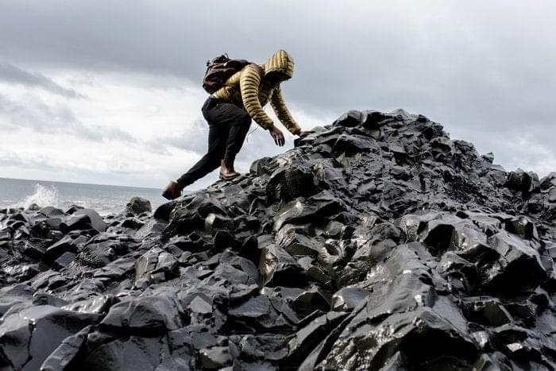

Best Service Urban public transit differs distinctly among Asia, North America, and Europe. In Asia, profit-driven.
Happy Clients funicular is a grade-separated fixed guideway transit system powered by a cable traction designed for steep inclines.
Fast Working A number of cable railway systems which pull their cars on inclined slopes were built since the 1820s
Our Service We have 2 different cases Authorities emphasize the importance of taking precautions to ensure travel safety. When traveling abroad, the odds favor a safe and incident-free trip, however, travelers can be subject to difficulties, crime and violence. Authorities emphasize the importance of taking precautions to ensure travel safety. When traveling abroad, the odds favor a safe and incident-free trip, however, travelers can be subject to difficulties, crime and violence. Authorities emphasize the importance of taking precautions to ensure travel safety. When traveling abroad, the odds favor a safe and incident-free trip, however, travelers can be subject to difficulties, crime and violence.
Default 2431
Business 872
No limits The origin of the word "travel" is most likely lost to history. The term "travel" may originate from the Old French word travail, which means 'work'. According to the Merriam Webster dictionary, the first known use of the word travel was in the 14th century. It also states that the word comes from Middle English travailen, travelen and earlier from Old French travailler Learn more

Reasons for traveling Reasons for traveling include recreation, tourism or vacationing,research travel, the gathering of information, visiting people, volunteer travel for charity, migration to begin life somewhere else, religious pilgrimages and mission trips, business travel, trade, commuting, and other reasons, such as to obtain health care or waging or fleeing war or for the enjoyment of traveling. Travellers may use human-powered transport such as walking or bicycling; or vehicles, such as public transport, automobiles, trains and airplanes. The wholesale sector depended (for example) on merchants dealing with/through caravans or sea-voyagers, end-user retailing often demanded the services of many itinerant peddlers wandering from village to hamlet, gyrovagues (Wandering Monks) and wandering friars brought theology and pastoral support to neglected areas, travelling minstrels practiced the never-ending tour, and armies ranged far and wide in various crusades and in sundry other wars. Pilgrimages were common in both the European and Islamic world and involved streams of travellers both locally (Canterbury Tales-style) and internationally. Learn more